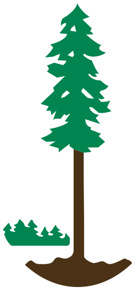
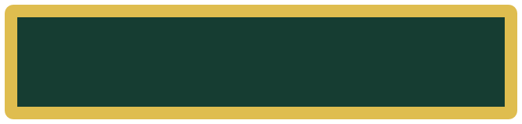

Wildlife scene · skysky.svgWildlife scene · snow mountainsmountains.svgWildlife scene · distant woodlanddistant-woodland.svgWildlife scene · riverriver.svgWildlife scene · river bankriver-bank.svgWildlife scene · large coniferlarge-tree.svgWildlife scene · small conifersmall-tree.svgWildlife scene · eagleeagle.svgWildlife scene · elkelk.svgWildlife scene · fishfish.svg
bc-ministry-v5/scenes/tree-parts
Tree scene · skysky.svgTree scene · distant forestdistant-forest.svgTree scene · mountainsmountains.svgTree scene · mountain ridge linemountain-ridge.svg

Tree scene · central conifer and trunkconifer.svg
bc-ministry-v5/marks
Separator · circle (wildlife crests)separator-circle.svgSeparator · diamond (tree crest)separator-diamond.svg
bc-ministry-v5/tabs
Service ribbon (Wildfire Service lower tab)service-ribbon.svg

Parks plateparks-plate.svgAirtanker wings (v5 engine, mirrored pair)airtanker-wings.svgAirtanker lower service band (v5 engine)airtanker-band.svg